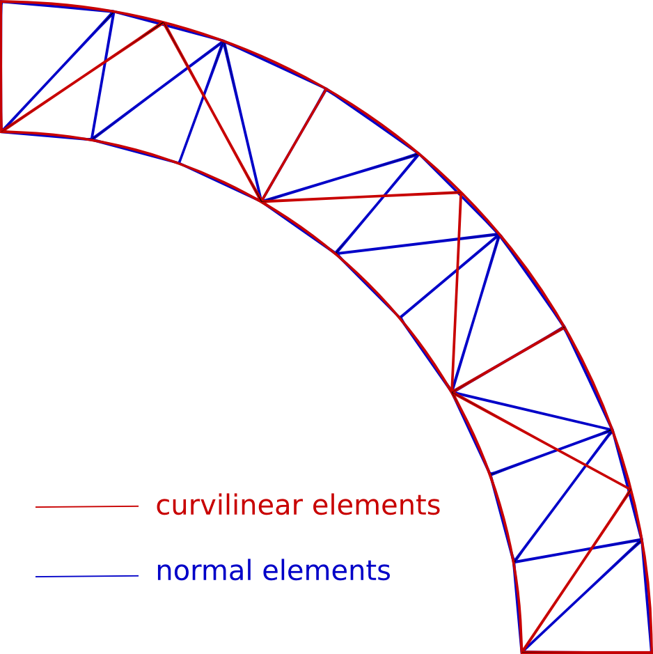
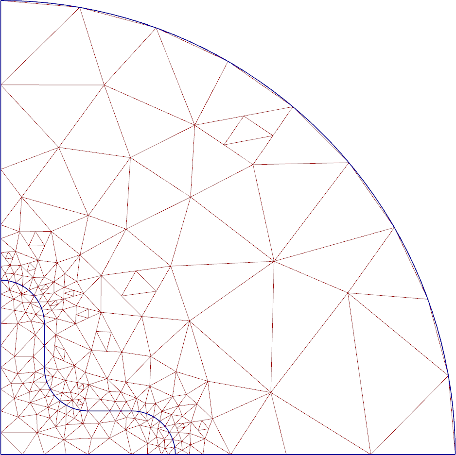
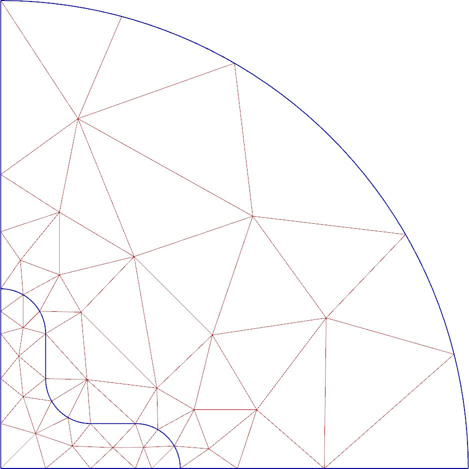
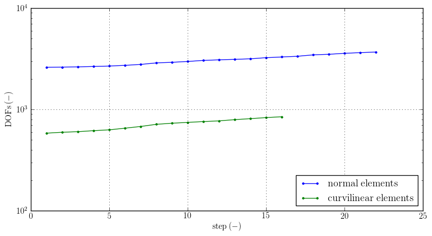
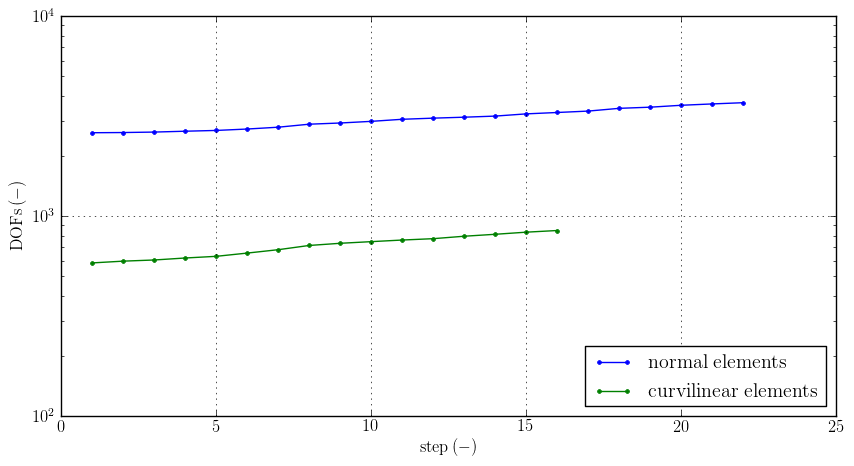
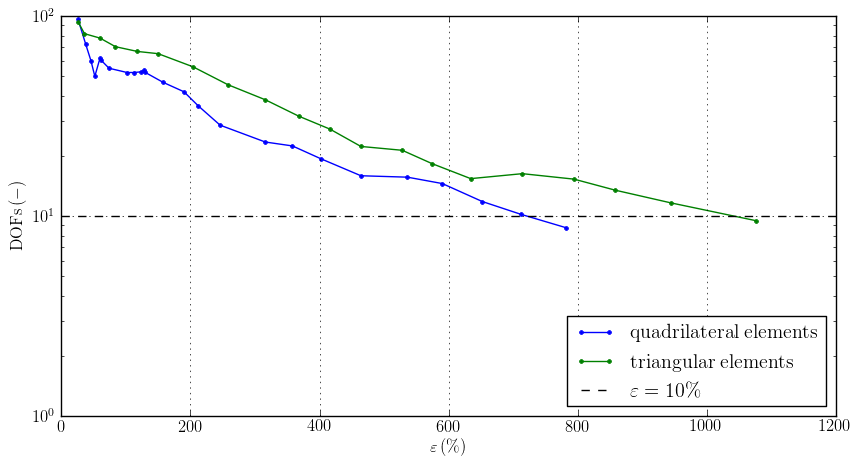

About Agros2D¶
Agros2D is a multiplatform C++ application for the solution of partial differential equations (PDE) based on the Hermes library, developed by the hpfem.org group at the University of West Bohemia in Pilsen. Agros2D is distributed under the GNU General Public License.
Supported Physical Fields:
- Electrostatic fields
- Electric current fields
- Magnetic fields (steady state, harmonic and transient analysis)
- High frequency electromagnetic fields – in development
- Temperature fields (steady state and transient analysis)
- Acoustic field (harmonic and transient analysis)
- Linear thermo-elasticity
- Incompressible flow (steady state and transient analysis) – in development
Key Features¶
hp-FEM¶
Ilustrative example (Electrostatic Axisymmetric Sparkgap):
.png)
.png)

Fig.: Initial (orange) and solution (red) mesh (h-adaptivity (p = 1), h-adaptivity (p = 2) and hp-adaptivity)


Fig.: Polynomial order (p-adaptivity and hp-adaptivity)


Fig.: Adaptivity charts
Curvilinear elements¶
Fig: Curvilinear and normal elements at the same ilustrative geometry
Ilustrative example ():
 Fig.: Normal (left) and curvilinear (right) meshes

 

Fig.: Adaptivity charts (hp-adaptivity)
Triangular or quadrilateral elements¶
Ilustrative example (Acoustic Axisymmetric Horn):


Fig.: Quadrilateral (left) and triangular (right) elements mesh


Fig.: Polynomial order on quadrilateral elements mesh (left) and triangular elements mesh (right)


Fig.: Adaptivity charts (hp-adaptivity)

{kind=link}
{kind=link}
{kind=link}
{kind=link}
{kind=link}